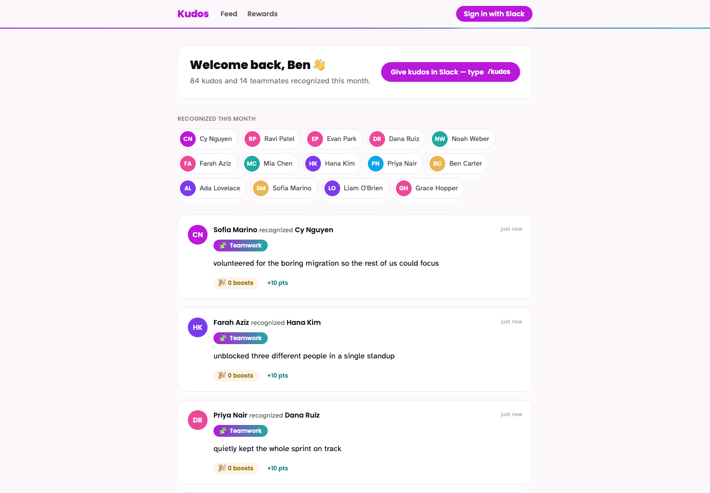
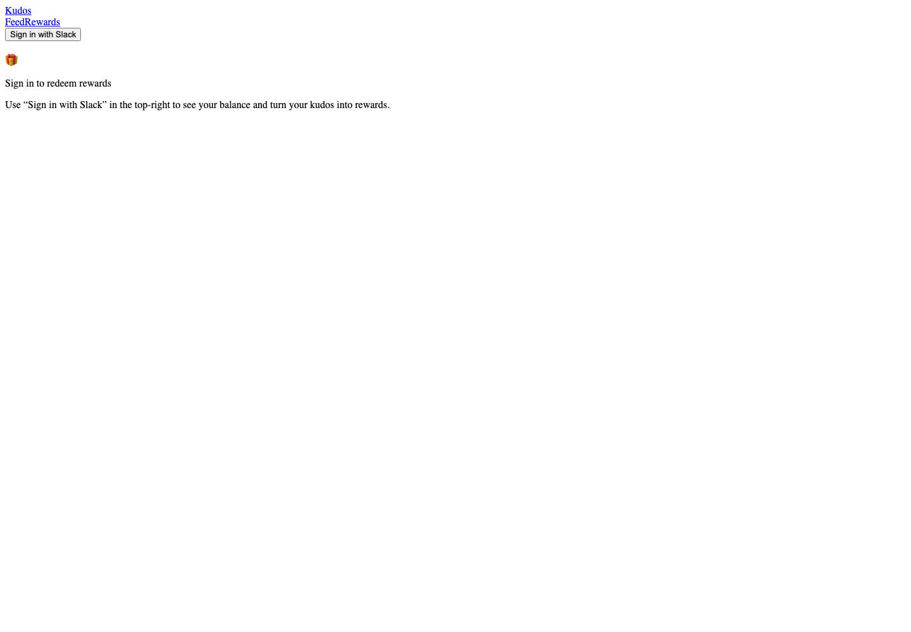
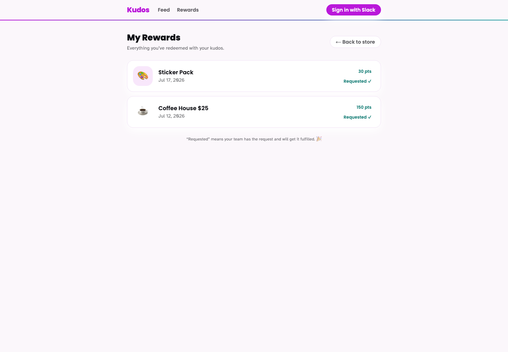
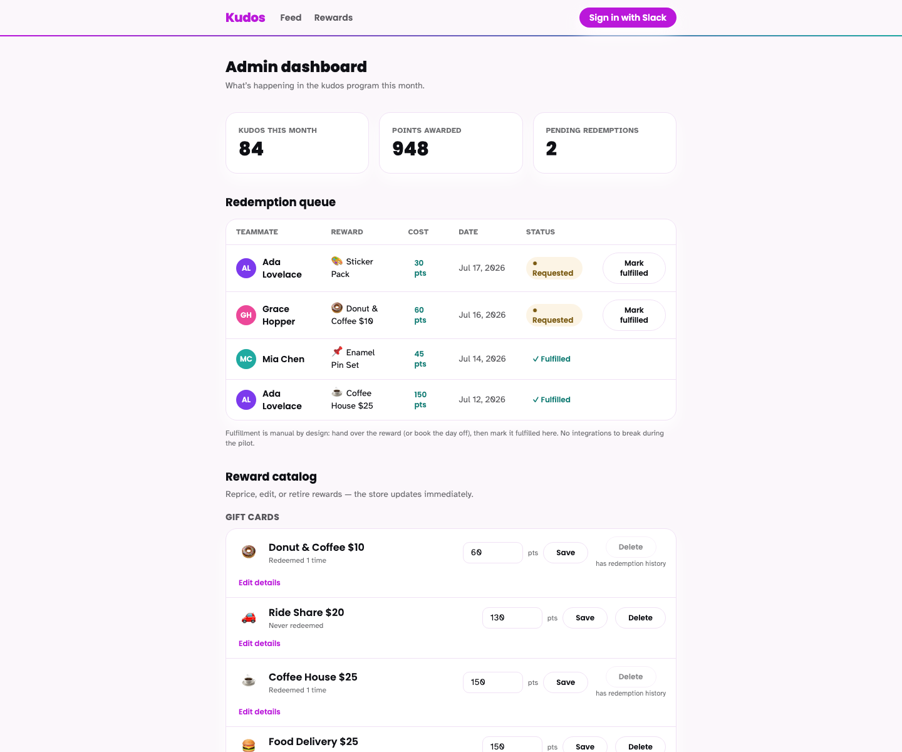
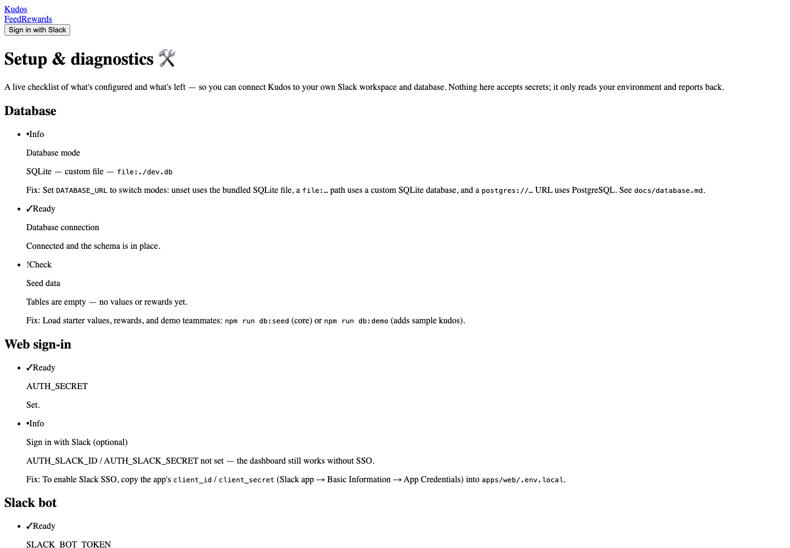

Priya Marcus
“Jumped on the 2 a.m. outage and had us back in twenty minutes.”
+10 points
4 boosts
#kudos
Bounty Hunters · Kudos Program
Recognize a teammate in Slack in about ten seconds. Points add up to rewards people actually want — celebrated right where the team already works.
Priya Marcus
“Jumped on the 2 a.m. outage and had us back in twenty minutes.”
The loop
The whole point is to remove friction: recognition happens in the flow of work, lands instantly and publicly, and turns into something real.
Type /kudos, pick a teammate, a value, and a specific “why.” A required reason keeps praise genuine — no new app to learn.
The kudos posts to #kudos and appears live in the web feed. Points credit the recipient, and a reaction boosts them further.
Browse a 26-reward store, watch the save-up bar climb, and redeem — confetti fires, and the celebration heads back to Slack.
…and the loop starts again.
A look inside
The live recognition feed, the rewards store, redemption history, and the setup a team runs once.





/setup checklist gets a team from zero to a running instance in minutes.What's in the box
Give, receive, redeem, and celebrate — backed by an economy that's designed to stay thoughtful and infrastructure that's built to hand off.
The reward catalog guides instead of dumping: crowd favorites, an affordability ladder, and a save-up bar that shows the one goal you're closest to.
Recognition happens where work already does. A 100-point monthly allowance makes giving deliberately scarce — so it stays genuine, and nobody can game it.
One docker compose up, a guided setup checklist, and a single-file SQLite database. Moving to Postgres later is a one-line datasource swap, not a rewrite.
Fresh AI reviewers ran security and WCAG 2.2 AA passes and caught real issues — an authorization bug and an accessibility blocker — both fixed, with the commits to prove it.
Use of AI, honestly told
Research agents verified the behavioral science before a line of product code, specialist agents built the catalog, design system, and store in parallel, and a red team of fresh reviewers checked every change. The receipts — decisions, corrections, and the bugs the review caught — are all in the docs.
Read the AI development story